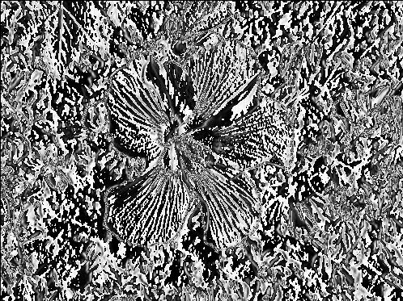
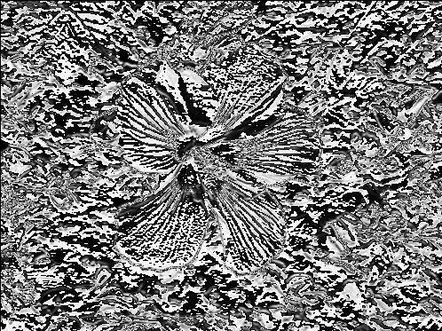
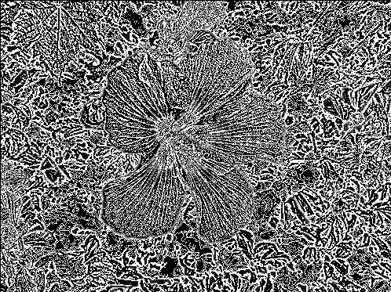
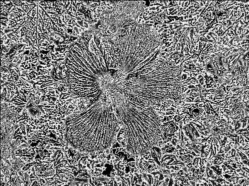
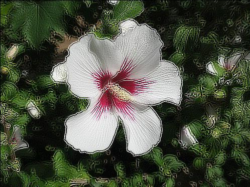

Korelační/konvoluční filtry
Při aplikaci filtru jde o to, že pro daný pixel se vypočítá nová hodnota na základě hodnot některých okolních pixelů, případně i jeho vlastní hodnoty. Například pro klasický gradientní Sobelův filtr zvýrazňování vertikálních hran $(\table -1, 0, 1; -2, 0, 2; -1, 0, 1)$ bude nová hodnota pixelu e určena následujícím způsobem:
| -1 | 0 | 1 |
| -2 | 0 | 2 |
| -1 | 0 | 1 |
| a | b | c | ||
| d | e | f | ||
| g | h | i | ||
| a | b | c | ||
| d | e | f | ||
| g | h | i | ||
| -1 | 0 | 1 |
| -2 | 0 | 2 |
| -1 | 0 | 1 |
čili $-1*a + 0*b + 1*c - 2*d + 0*e + 2*f - 1*g + 0*h + 1*i$
Je zjevné, že nemá-li filtr zrovna rozměr 1×1, znamená to, že krajní řádky a sloupce obrázku nemusí býti pokryté a musí se tudíž řešit zvlášť. Nejčastěji se používají čtvercové filtry s lichými rozměry (symetričnost a nejsnažsí aplikace) a „problematická“ místa se řeší několika různými způsoby:
- krajní sloupečky a řádky se jednoduše oříznou a výstupní obrázek je tak o fous menší (což použijeme v zájmu zjednodušení my);
- cyklické navázání okrajů – snadno se počítá (modulo na rozměr), ale zanáší do pixelu většinou naprosto nesouvisející informaci z protější strany;
- doplnění nulami – podle typu filtru může zanést chybu malou, ale také větší.
Co se hledání (a případně následně zvýrazňování) hran týká, je myšlenka velmi jednoduchá: V černobílém obrázku je svislá hrana zjevně tam, kde jsou nalevo a napravo od daného pixelu přesně opačné barvy (a podobně pro hrany vodorovné či šikmé). Matematicky to v nejjednodušším případě vlastně znamená, že aplikujeme-li na daný pixel například filtr $(\table -1, 0, 1)$, dá stejná barva na obou stranách pixelu nulu (záporná a kladná složka se navzájem odečtou; samozřejmě za předpokladu, že suma koeficientů filtru je sama nulová!) zatímco nestejná nikoli. Sofistikovanější filtry pak pouze započítávají vliv bližšího a vzdálenějšího okolí s různými vahami.
Je zřejmé, že hrany se počítají buď pro každou barvovou složku zvlášť, nebo pro obrázek převedený do odstínů šedi. Pro detekci hran použijeme druhou variantu, pro zostření obrazu první. Pracovat budeme nad naším starým známým testovacím obrázkem  .
.
PS: Jsou-li k práci potřeba nějaké další rovnice, jsou uvedeny v nápovědě.

Sobelovým filtrem $(\table -1, 0, 1; -2, 0, 2; -1, 0, 1)$.nápověda


případně $(\table -1, -1, -1; -1, 8, -1; -1, -1, -1)$ s výsledkem

Jelikož kopii původního obrazu vlastně můžeme získat aplikací filtru $(\table 0, 0, 0; 0, 1, 0; 0, 0, 0)$, dá se sečtení nahradit aplikací filtru jediného. Například pro druhou variantu Laplaceova operátoru z předchozího příkladu jde o rovnici s výsledným filtrem $$(\table -1, -1, -1; -1, 8, -1; -1, -1, -1) + (\table 0, 0, 0; 0, 1, 0; 0, 0, 0) = (\table -1, -1, -1; -1, 9, -1; -1, -1, -1)$$ výsledek jehož aplikace jest:

nápověda

Zkuste program pro zostření přepsat za pomoci některého alternativního interpretru a porovnejte jeho rychlost s programem v čistém Python'u.
nápověda
Jsou-li masky/matice/filtry symetrické, není mezi konvolučními a korelačními rozdíl.